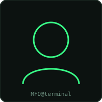

sobre mí
Del aula al SOC
Soy Mariano Facundo Ortiz, estudiante de la Licenciatura en Seguridad Informática (Universidad Siglo 21) y aspirante a analista SOC dentro de un equipo Blue Team. Me interesa la parte defensiva de la ciberseguridad: detección de amenazas, monitoreo, respuesta a incidentes y fortalecimiento de infraestructuras.
Vengo construyendo una base técnica amplia — redes, bases de datos, programación y criptografía — antes de especializarme, porque entender cómo funciona un sistema completo es lo que permite defenderlo mejor.

stack técnico
Habilidades
Blue Team & SOC
Monitoreo, detección de amenazas y análisis de alertas orientado a defensa.
Redes
Fundamentos de redes, protocolos y arquitectura de infraestructuras.
Bases de datos & SQL
Consultas, diseño relacional y fundamentos de administración de datos.
Python
Automatización de tareas y scripting aplicado a seguridad.
Criptografía & Blockchain
Principios de cifrado, integridad de datos y tecnologías descentralizadas.
Security+
Base conceptual amplia en seguridad de la información.